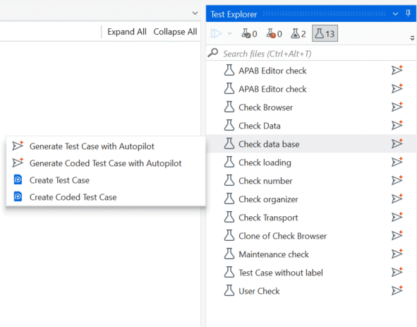

06. Automate Test Cases with Studio Desktop and Delegate¶
Automate your manual test cases in Studio with Delegate. Each automation stays linked to its test case in Test Manager.
Access required
You need an App Test Developer license to create and publish Test Automation projects.
What you'll do¶
You switch between two tools on this page. Each step is labelled with the one it uses:
| Tool | What you do |
|---|---|
| Delegate | Paste the prompt in Delegate, then wait and watch it build in Studio |
| Studio Desktop | Work in Studio Desktop yourself, with Autopilot for Testers |
Click a step to jump to it.
Create a Test Automation project¶
Delegate
Create a Studio Test Automation project named UiBank Tests.
Check it: UiBank Tests opens in Studio, in Documents\UiPath\UiBank Tests.
Install the UI Automation package¶
Delegate
Install the latest stable UI Automation activities package in UiBank Tests.
Check it: Manage Packages → Project Dependencies lists UiPath.UIAutomation.Activities.
Link Studio to your Test Manager project¶
Delegate
Replace <YOUR_PROJECT_KEY> with your project key, then paste:
Connect this project to my Test Manager project <YOUR_PROJECT_KEY>, then open Test Explorer to show its test cases.
Check it: the connection icon is green, and Test Explorer lists your test cases.
Build the Object Repository¶
Delegate
The Object Repository stores the app's screens and UI elements for every test case to reuse.
Building it by hand is usually one of the slowest parts of test automation: you capture every screen and element yourself. Tell Delegate what to capture, and it builds the repository for you. To cover every screen and element the test cases need, use the prompt below.
Continue in Delegate
-
Paste:
Create an Object Repository in UiPath Studio Desktop for the UiBank web app running in Chrome. Application - Name: UiBankORForChrome - Browser: Chrome - Capture each element live in the browser - Prefer stable selectors (id, name, aria-label, visible text) over index-based ones - Avoid dynamic values in selectors - Name each element exactly as listed below Screens and elements 1. Screen: Welcome (https://uibank.uipath.com/welcome) - Username (input) - Password (input) - Sign In (button) - Products (dropdown menu) - Loans (menu item in the Products dropdown; open Products first so Loans is visible when you capture it) 2. Screen: Loans (https://uibank.uipath.com/loans) - Apply For Loan (button) - Already Have A Loan (button) 3. Screen: Loan Application (https://uibank.uipath.com/loans/apply) - Email Address of Requester (input) - Loan Amount Requested (input) - Loan Term (dropdown) - Current Yearly Income Before Taxes (input) - Age (input) - Submit Loan Application (button) 4. Screen: Loan Result (the results view shown after you submit the loan application) - Result Text: the full text block of the response - Rate: only the number shown below "With a fantastic rate of:", without the "%" sign - Loan ID: the value shown below "Your new loan ID is:" Anchor these elements to their label text, not to the changing values, so the selectors work for any result. To reach this screen, submit the form with sample valid values. Save the Loan ID for screen 6. 5. Screen: Loan Lookup (https://uibank.uipath.com/loans/lookup) - Loan ID (input) - Retrieve Loan Details (button) 6. Screen: Loan Lookup Result (the results view shown after you look up a Loan ID) - Result Text: the full text block of the response - Loan ID: the value shown beside its label, anchored to the label text To reach this screen, look up the Loan ID you saved from screen 4. Acceptance criteria - All 6 screens and 20 elements exist under UiBankORForChrome, named as above - Every selector validates (highlights the correct element) on its live screen - Report any element you could not capture reliably, and why -
Don't use your desktop or browser while it captures.
Write your own Object Repository prompt
Describe what you need in plain language, such as the app, its screens, and the elements to capture. Delegate can also review and fine-tune your prompt, or fix it when something's missed.
Check it:
-
In Studio's Object Repository panel, expand UiBankORForChrome. It lists all 6 screens and their elements. If it's empty, reload the project.

-
Open UiBank in Chrome on the Welcome screen. Right-click an element, such as Username, and select Highlight.

-
In the browser, the element is outlined in green, and its label anchor in blue. Repeat for a few elements on each screen.

If an element doesn't highlight, ask Delegate to recapture it.
Complete this step before you continue
Autopilot for Testers builds your test cases from the Object Repository elements. Without them, it can't automate the test cases in the next step.
Switch to Studio Desktop
Delegate has set up the project and built the Object Repository. For the next two steps, you work directly in Studio Desktop, using Autopilot for Testers to turn your manual test cases into automations.
Automate the test cases with Studio Desktop¶
Studio Desktop
It's your turn now!
- In Test Explorer, right-click a manual test case → Generate Test Case with Autopilot.
- Check it uses Object Repository elements and the expected results. If not, ask Delegate to fix it.
-
Check the Use Application/Browser cards. The data-driven test in the next section must open and close the app once per row, and your requirement and test case may not say so.
✅ First card: set Open to Always.
✅ Last card: set Close to Always.
✅ Cards in between: keep Open and Close as Never.
-
Run it locally.

Check it: at least 2 automated test cases pass locally, and the test case meant to fail, from 04. Generate Test Cases, fails.
Optional: Fix the activity display names
Autopilot names each activity after its manual step, including the test data, which makes long, hard-to-read display names.
-
Replace Submit Short-Term Request with the name of the test case you generated, then paste in Delegate:
I've created test case Submit Short-Term Request using autopilot feature in Studio. Fix the Display names. Provide appropriate names. -
Reload the test case in Studio and check the new names.
Generate test data¶
Studio Desktop
TBD
Publish the test cases¶
Delegate
Switch back to Delegate
Your test cases are automated. Go back to Delegate to publish them.
Paste:
Set the <YOUR_TEST_CASE_NAMES> test cases in UiBank Tests as publishable and publish the project.
Check it: in Orchestrator, each automated test case shows in Test Cases.
Nice work!¶
Your test cases are automated, data-driven, and published, ready to run from Test Manager.